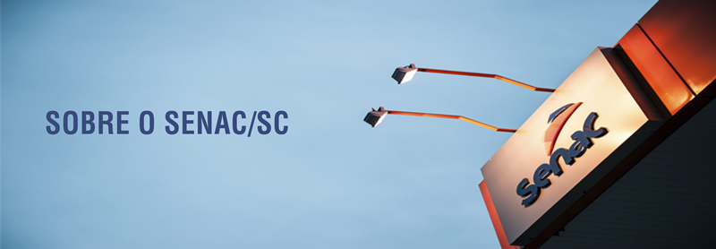

Sobre Nós
Bem-vindo ao Senac!
Quem Somos
O ano de 1947 ficou marcado na história de Santa Catarina como a data de criação do Senac no Estado - uma instituição privada sem fins lucrativos. Desde então, empresários do comércio de bens, serviços e turismo e o povo catarinense desenvolveram suas habilidades profissionais por meio dos cursos e atividades realizadas pelo Senac em Santa Catarina.
O crescimento da organização acompanhou a evolução econômica de Santa Catarina e hoje o Senac está em todas as regiões do Estado com uma Administração Regional e 28 pontos fixos de atendimento, sendo dezesseis Unidades ofertantes de ensino superior, dois centros especializados, além dos centros de educação profissional e Unidades Móveis. Devido à grande inserção em Santa Catarina, as Unidades Operativas do Senac estão organizadas por regiões e presentes nas seguintes cidades: Região Oeste (Caçador, Concórdia, Chapecó, Joaçaba, São Miguel do Oeste, Videira e Xanxerê), Região Sul (Florianópolis, São José, Criciúma, Araranguá, Palhoça, Curitibanos, Lages e Tubarão) e Região Norte-Vale (Balneário Camboriú, Blumenau, Brusque, Itajaí, Rio do Sul, Jaraguá do Sul, Joinville, Canoinhas, Porto União, Timbó, São Bento do Sul e Mafra).
A organização oferece cursos divididos em diferentes eixos tecnológicos, conhecidos como áreas de atuação, sendo eles: desenvolvimento educacional e social; ambiente e saúde; gestão e negócios; turismo, hospitalidade e lazer; informação e comunicação; infraestrutura; produção alimentícia; produção cultural e design; recursos naturais; e segurança. Esses eixos permitem ao empresariado e à sociedade contar com cursos de desenvolvimento profissional em diversas áreas, contribuindo com o crescimento de Santa Catarina.
O Senac possibilita às pessoas a construção de uma carreira sólida, pois há desde cursos de formação inicial e continuada – para aperfeiçoamento profissional-, cursos técnicos de nível médio – que formam o trabalhador em uma determinada área de atuação com o certificado de técnico -, cursos superiores de tecnologia, com duração média de dois anos e que certificam os profissionais como tecnólogos – profissionais com habilidades para atender as demandas do mercado de trabalho -, cursos superiores de pós-graduação e cursos a distância, estes oferecidos pela organização desde 2010 e que já faz sucesso entre os demais Departamentos Regionais do Senac e entre alunos virtuais de todas as regiões do Brasil.
Nossa Missão
Educar para o trabalho em atividades do comércio de bens, serviços e turismo.
Nossa Visão
Ser a Instituição brasileira que oferece as melhores soluções em educação profissional, reconhecida pelas empresas
Nossos Valores
Transparência
Excelência
Inclusão social
Inovação
Atitude empreendedora
Desenvolvimento sustentável
Educação para a autonomia